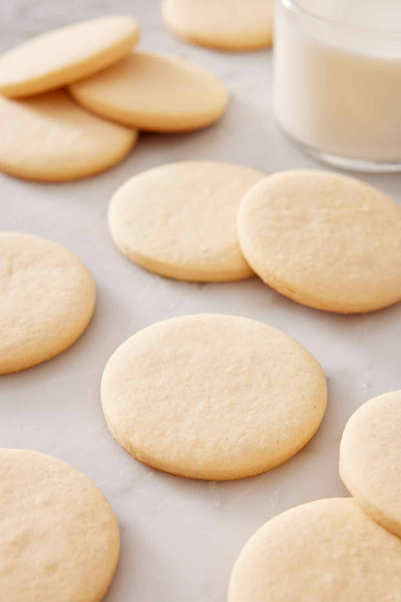

Sugar Cookies

Description
A recipe for Soft Sugar Cookies that can yield about 18 - 26 cookies, depending on whether
you make several large cookies or many small drops or simply use a cookie cutter.
- Prep time: approx. 40 minutes
- Cook time: approx. 12 minutes
- Total time: approx. 3 hours (including chilling)
Tools/Equipment
- Medium Bowl
- Large bowl
- Whisk
- Rubber Spatula or Bowl scraper
- Mixer (Handheld or Standing)
- Measuring spoons
- 1 Cup
- 3/4 Cup
- 1/4 Cup
- 1 tablespoon
- 1 teaspoon
- 1/2 teaspoon
- 1/4 teaspoon
- Baking Sheets
- Parchment Paper or A silcone Baking Mat
-
- Optional - Cookie cutter
-
- Optional - Rolling Pin
Ingredients
- 2 and 1/4 cups of All-purpose Flour
- 1/2 teaspoon of Baking Powder
- 1/4 teaspoon of Salt
- 3/4 cup of Butter, softened to room temp
- 3/4 cup of Granulated Sugar
- 1 large Egg at room temp
- 2 teaspoons of Pure Vanilla Extract
- (Optional) - 1/4 teaspoon of Almond extract
Instructions
- In a medium bowl, combine all the dry ingredients - the flour, baking powder, and salt together and
whisk them. Then set aside.
- In a different larger bowl, use a handheld or stand mixer to beat the butter and sugar together on
high until the mixture is light and creamy.
- Then in the large bowl, add eggs, vanilla, and (if you are using it) almong extract, and beat on high
until combined for about a minute.
- Scrape down the sides and bottom of the bowl and beat again
as neeeded to ensure all of the dough is combined and mixed well.
- Now, add the dry ingredients from the medium bowl into the large bowl with the wet ingredients and
mix on low speed until combined, presumably when the dough is soft enough.
- if it seems soft and sticky, beat in 1 more tablespoon of flour.
- Cover the dough with tightly with a tight lid or saran wrap, and refrigerate for at
least 2 hours or up to 2 days.
- When ready, take the dough out of the refridgerator and preheat the oven to 350 F (177 C)
- Put some parchment paper on baking sheets or use a baking mat, and spray with cooking spray
- Lightly dust the sheets and your hands with flour to reduce stickiness. Then depending on whether you
are using a cookie cutter or hand...
-
Cookie Cutter:
- Divide the dough into about half and separateportions.
- Then with a lightly floured rolling pin, roll the
dough out, ideally to about 1/4 inch thickness.
- Then use the cookie cutter to cut the dough into shapes on the parchment paper/silcone
baking mat, gather the scraps, reroll, and continue until all the dough is used.
- Repeat with the second half.
-
Hand:
- take a piece of dough, roll, shape, and then place it on the parchment paper/silicone
baking mat.
- Repeat until all the dough is done.
-
- TIP - when making the individual cookies by hand, remember in
addition to proper sanitation, you should continously dust your hands with flour
to avoid the dough from sticking too much to your hands.
- TIP - Remember the cookies will expand and grow as they bake, so make
sure there is enough space between the cookies and that they will be your ideal size when
fully baked.
- Finally, place the baking sheet into the oven and bake for about
11-12 minutes or until the edges of the cookies are very lightly browned.
If the oven has hot spots or you want to be more sure it will bake properly, you can rotate the
baking sheet halfway.
- When finished, take out the oven and allow them to cool for about 5 minutes or until mildly warm
-
No decerations: you can then either enjoy the cookies right away or store them
for later. Stored properly with a tight container, these cookies should last for about a week to
10 days, two weeks if refrigerated, and about 5 months if freezed.
-
With Decorations: when cooled. you can decorate with icing or buttercream.
Then wait for the icing to set, and either enjoy them or store them for later. Stored properly,
decorated with icing, they can last at room temperature for about 5 days, 10 days if
refrigerated, and 3 months freezed. If decorated with cookie buttercream, they can last at room
temp for up to a day, or 5 days if refrigerated, and 3 months if freezed.
Home
Original Recipe by Sally Mckenney